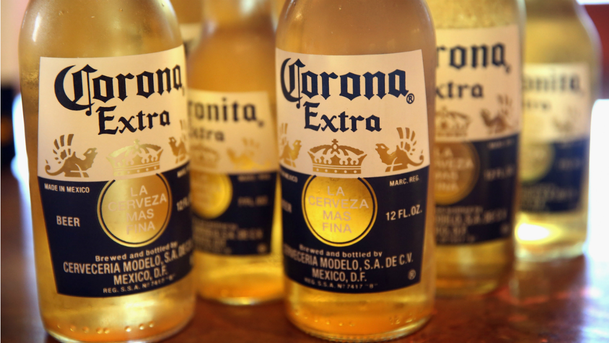

<style>
  :root {
    --ion-safe-area-top: 20px;
    --ion-safe-area-bottom: 22px;
  }
</style>

<ion-app>

  <ion-header collapse="condense">
    <ion-toolbar>
      <ion-title></ion-title>
    </ion-toolbar>
      <ion-toolbar>
        <ion-title size="large">Découvrir</ion-title>
    </ion-toolbar>
  </ion-header>

  <ion-content>
    <ion-list>
      <ion-list-header>
        Bières les plus populaires 
      </ion-list-header>
    </ion-list>

    <ion-slides slidesPerView="2.3" spaceBetween="250" pager="true">
      <ion-slide *ngFor="let item of beers">
        <ion-card>
          
          <ion-card-content>
            <ion-card-title></ion-card-title>
            <h2>Corona</h2>
          </ion-card-content>
        </ion-card>
      </ion-slide>
      <ion-slide>
        
      </ion-slide>
    </ion-slides>


  </ion-content>

</ion-app>